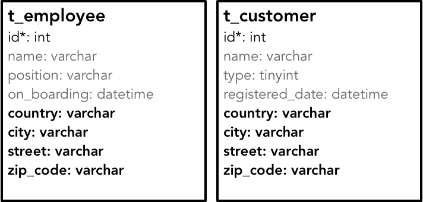
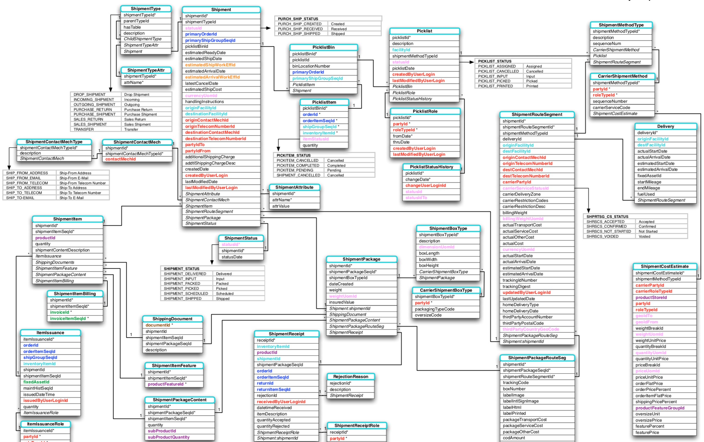

- 001 「战略篇」访谈 DDD 和微服务是什么关系？.md.html
- 002 「战略篇」开篇词：领域驱动设计，重焕青春的设计经典.md.html
- 003 领域驱动设计概览.md.html
- 004 深入分析软件的复杂度.md.html
- 005 控制软件复杂度的原则.md.html
- 006 领域驱动设计对软件复杂度的应对（上）.md.html
- 007 领域驱动设计对软件复杂度的应对（下）.md.html
- 008 软件开发团队的沟通与协作.md.html
- 009 运用领域场景分析提炼领域知识（上）.md.html
- 010 运用领域场景分析提炼领域知识（下）.md.html
- 011 建立统一语言.md.html
- 012 理解限界上下文.md.html
- 013 限界上下文的控制力（上）.md.html
- 014 限界上下文的控制力（下）.md.html
- 015 识别限界上下文（上）.md.html
- 016 识别限界上下文（下）.md.html
- 017 理解上下文映射.md.html
- 018 上下文映射的团队协作模式.md.html
- 019 上下文映射的通信集成模式.md.html
- 020 辨别限界上下文的协作关系（上）.md.html
- 021 辨别限界上下文的协作关系（下）.md.html
- 022 认识分层架构.md.html
- 023 分层架构的演化.md.html
- 024 领域驱动架构的演进.md.html
- 025 案例 层次的职责与协作关系（图文篇）.md.html
- 026 限界上下文与架构.md.html
- 027 限界上下文对架构的影响.md.html
- 028 领域驱动设计的代码模型.md.html
- 029 代码模型的架构决策.md.html
- 030 实践 先启阶段的需求分析.md.html
- 031 实践 先启阶段的领域场景分析（上）.md.html
- 032 实践 先启阶段的领域场景分析（下）.md.html
- 033 实践 识别限界上下文.md.html
- 034 实践 确定限界上下文的协作关系.md.html
- 035 实践 EAS 的整体架构.md.html
- 036 「战术篇」访谈：DDD 能帮开发团队提高设计水平吗？.md.html
- 037 「战术篇」开篇词：领域驱动设计的不确定性.md.html
- 038 什么是模型.md.html
- 039 数据分析模型.md.html
- 040 数据设计模型.md.html
- 041 数据模型与对象模型.md.html
- 042 数据实现模型.md.html
- 043 案例 培训管理系统.md.html
- 044 服务资源模型.md.html
- 045 服务行为模型.md.html
- 046 服务设计模型.md.html
- 047 领域模型驱动设计.md.html
- 048 领域实现模型.md.html
- 049 理解领域模型.md.html
- 050 领域模型与结构范式.md.html
- 051 领域模型与对象范式（上）.md.html
- 052 领域模型与对象范式（中）.md.html
- 053 领域模型与对象范式（下）.md.html
- 054 领域模型与函数范式.md.html
- 055 领域驱动分层架构与对象模型.md.html
- 056 统一语言与领域分析模型.md.html
- 057 精炼领域分析模型.md.html
- 058 彩色 UML 与彩色建模.md.html
- 059 四色建模法.md.html
- 060 案例 订单核心流程的四色建模.md.html
- 061 事件风暴与业务全景探索.md.html
- 062 事件风暴与领域分析建模.md.html
- 063 案例 订单核心流程的事件风暴.md.html
- 064 表达领域设计模型.md.html
- 065 实体.md.html
- 066 值对象.md.html
- 067 对象图与聚合.md.html
- 068 聚合设计原则.md.html
- 069 聚合之间的关系.md.html
- 070 聚合的设计过程.md.html
- 071 案例 培训领域模型的聚合设计.md.html
- 072 领域模型对象的生命周期-工厂.md.html
- 073 领域模型对象的生命周期-资源库.md.html
- 074 领域服务.md.html
- 075 案例 领域设计模型的价值.md.html
- 076 应用服务.md.html
- 077 场景的设计驱动力.md.html
- 078 案例 薪资管理系统的场景驱动设计.md.html
- 079 场景驱动设计与 DCI 模式.md.html
- 080 领域事件.md.html
- 081 发布者—订阅者模式.md.html
- 082 事件溯源模式.md.html
- 083 测试优先的领域实现建模.md.html
- 084 深入理解简单设计.md.html
- 085 案例 薪资管理系统的测试驱动开发（上）.md.html
- 086 案例 薪资管理系统的测试驱动开发（下）.md.html
- 087 对象关系映射（上）.md.html
- 088 对象关系映射（下）.md.html
- 089 领域模型与数据模型.md.html
- 090 领域驱动设计对持久化的影响.md.html
- 091 领域驱动设计体系.md.html
- 092 子领域与限界上下文.md.html
- 093 限界上下文的边界与协作.md.html
- 094 限界上下文之间的分布式通信.md.html
- 095 命令查询职责分离.md.html
- 096 分布式柔性事务.md.html
- 097 设计概念的统一语言.md.html
- 098 模型对象.md.html
- 099 领域驱动设计参考过程模型.md.html
- 100 领域驱动设计的精髓.md.html
- 101 实践 员工上下文的领域建模.md.html
- 102 实践 考勤上下文的领域建模.md.html
- 103 实践 项目上下文的领域建模.md.html
- 104 实践 培训上下文的业务需求.md.html
- 105 实践 培训上下文的领域分析建模.md.html
- 106 实践 培训上下文的领域设计建模.md.html
- 107 实践 培训上下文的领域实现建模.md.html
- 108 实践 EAS 系统的代码模型.md.html
- 109 后记：如何学习领域驱动设计.md.html
- 捐赠
041 数据模型与对象模型
在建立数据设计模型时，我们还需要注意表设计与类设计之间的差别，这事实上是数据模型与对象模型之间的差别。
数据模型与对象模型
我们首先来分析在设计时对冗余的考虑。前面在讲解数据分析模型时就提及，在确定数据项模型时，需要遵循数据库理论的设计范式，其中一个目的是避免数据冗余。但是，避免了数据冗余并不意味着代码能支持重用。例如，员工表与客户表都定义了“电子邮件”这个属性列。该属性列在业务含义上是完全相同的，但在数据表设计时，却只能分属于两个表不同的列，因为对于数据表而言，“电子邮件”列其实是原子的，属于 varchar 类型。
如果针对业务概念建立对象模型，需要遵循“高内聚低耦合”的设计原则，如果发现多个属性具有较强的相关性，需要将其整合起来共同定义一个类。例如国家、城市、街道和邮政编码等属性，它们都与地址相关，共同组成完整的地址概念，在对象模型中就可以定义 Address 类。
在数据模型中，关系数据表并不支持自定义类型，在设计时又需要支持一范式（1NF），即确保数据表的每一列保持原子性，就必须将这个内聚的组合概念进行拆分。例如，地址就不能作为一个整体被定义为数据表的一个列，因为系统需要访问地址中的城市信息，如果仅设计为一个地址列，就违背了一范式。这时，地址在数据模型中就成了一个分散的概念。若要保证其概念完整性，唯一的解决方案是将地址定义为一个独立的数据表；但这又会增加数据模型的复杂性，更会因为引入不必要的表关联而影响数据库的访问性能。正如 Jimmy Nilsson 所说：“关系模型是用来处理表格类型的基本数据的，这既有好的一面，也有坏的一面。面向对象模型很善于处理复杂数据。”
针对同样的业务概念，我们可以对比数据模型与对象模型之间的差异。例如，员工、客户与地址的数据模型如下图所示：

虽然员工与客户都定义了诸如 country、city 等地址信息，但它们是分散的，并被定义为数据表提供的基本类型，无法实现两个表对地址概念的重用。对象模型就完全不同了，它可以引入细粒度的类型定义来体现丰富的领域概念，封装归属于自己的业务逻辑，同时还提供了恰如其分的重用粒度：
对比这两个模型，组成数据模型的数据表是一个扁平的数据结构，数据表中的每一列都是数据库的基本类型，而组成领域模型的类则具有嵌套的层次结构。在设计时，更倾向于建立细粒度对象来表达一个高度内聚的概念，如 Address 与 ZipCode 类。
在建立数据设计模型时，与数据表对应的持久化对象往往难以表达业务的约束规则。例如，运输（Shipping）与运输地址（ShippingAddress）满足“每个 Shipping 必须**有且只有一个 **ShippingAddress”这一业务规则。在数据模型中，可以通过在运输与运输地址之间创建关系来表达，例如在可视化的 ER 图中，用虚线代表任选，用实线代表强制。但这种关系连线虽然表达了这种约束关系，却没法显式地体现这一业务概念，除非在数据模型图中采用注解来说明。如果采用对象模型，就可以通过引入 ShippingSpecification 这个类型来体现这种约束逻辑。
从设计模型看，构成数据模型主体的数据库与数据表，明显存在粒度和边界的局限性。这种局限性在一定程度上影响了数据建模的质量。关系数据库的设计范式并没有从类型复用的角度去规定数据表的设计，由于关系表不支持自定义类型，无法支持 Jimmy Nilsson 所说的“复杂数据”，因此可以认为在数据模型中，数据表才是最小的复用单元。由于建立一个数据表存在 I/O 成本，会影响数据库的访问性能，因而在数据模型中，通常不建议为细粒度但又是高内聚的数据类型单独建立数据表，如前面给出的“地址”的例子。换言之，关系数据库的设计范式仅仅从数据冗余角度给予了设计约束，如果照搬数据模型去建立类模型，就有可能无法避免代码冗余。
对于一个数据库而言，关系数据库的表结构是扁平的，数据表之间可以建立关联，也可以隐式地通过一对多的关系表达具有层级的父子关系，但数据模型自身却无法体现这种层次。下图是 Apache OFBiz 项目中关于运输相关的数据模型：

这个数据模型一共定义了 31 张数据表，这些表对应的业务概念上存在主从关系，以及强弱不同的耦合关系。例如，Shipment 表显然是主表，诸如 ShipmentAttribute、ShipmentStatus、ShipmentType 与 ShipmentItem 等都是围绕着 Shipment 表建立的从表。但是，数据模型自身却无法体现这种主从关系。我们之所以能识别出这种主从关系，其实是基于对数据表名的语义推断。通过语义推断，我们也能判断 Shipment 与 ShipmentItem 等表之间的关系要明显强于 Shipment 与 PicklistBin、Picklist、PicklistRole 等表之间的关系，但数据模型并没有清晰地表达这种边界。
究其原因，在关系数据库的数据模型中，数据库是最大的复用单元。设计数据库时，往往是一个库对应一个子系统或者一个微服务，而在数据库和数据表之间，缺少合适粒度的概念去维护数据实体的边界。它缺少领域驱动设计引入的聚合（Aggregate）、模块（Module）等各种粒度的边界概念。显然，扁平的关系型数据结构无法体现领域概念中丰富的概念层次。
NoSQL 的数据设计模型
NoSQL 数据库的设计模型就截然不同了，尤其是文档型的 NoSQL 数据库，能够通过定义嵌套关系的无模式数据表相当自然地体现对象图（Object Graph）的结构。因此，在针对 NoSQL 数据库建立数据设计模型时，就可以直接运用领域建模的设计原则，如引入聚合的概念来设计表模型。
Martin Fowler 在文章 Aggregate Oriented Database 中指出，NoSQL 数据库需要有效地将数据存储在分布式集群之上，而他则建议存储的基本数据单元应为领域驱动设计中的聚合（Aggregate），聚合的粒度天然地满足了诸如数据分片这样的分布式策略。Martin Fowler 以订单为例，说明了关系数据库与 NoSQL 数据库的不同，如下图所示：
一个订单对象在关系数据库中需要被分解为多张数据表，但对于诸如 MongoDB、Elasticsearch 这样的数据库，则可以认为是一个聚合。因此，在设计 NoSQL 的数据模型时，可以运用领域驱动设计中聚合的设计原则。
我在设计一个报表系统的报表元数据管理功能时，选择了 Elasticsearch 作为存储元数据的数据库。在设计元数据管理的数据模型时，就通过聚合来思考元数据中 ReportCategory、Report 与 QueryCondition 三者之间的关系。
从业务完整性看，Report 虽属于 ReportCategory，但二者之间并没有强烈的约束关系，即不存在业务上的不变量（Invariant）。ReportCategory 可以没有 Report，成为一个空的分类；我们也可以撇开 ReportCategory，单独查询所有的 Report。倘若我们将 Report 放到 ReportCategory 聚合中，由于 Report 可能会被单独调用，聚合的边界保护反而成为了障碍，这样的设计并不合理。因此，ReportCategory 和 Report 应该属于两个不同的聚合。
分析 QueryCondition 与 Report 之间的关系，又有不同。当 QueryCondition 缺少 Report 对象后，还有存在意义吗？答案一目了然，没有 Report，就没有 QueryCondition。皮之不存毛将焉附！因此可以确定 Report 与 QueryCondition 应属于同一个聚合。于是，我们得到如下模型：
这样设计获得的模型显然是一个领域模型。当我们将其以 JSON 的格式持久化到 Elasticsearch 的数据表时，又可以认为该模型同时就是 Elasticsearch 的数据模型。
这种面向文档的嵌套层次结构与对象模型更为相配，并在多数时候采用 JSON 结构来表达数据结构。JSON 数据结构在许多产品和项目中得到运用，一些传统的关系型数据库也开始向这个方向靠拢。例如，目前流行的开源关系数据库如 MySQL 和 PostgreSQL，都已支持 JSON 这样的文档型数据结构。
© 2019 - 2023 Liangliang Lee. Powered by gin and hexo-theme-book.